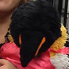

Svetlana Escapealov
Grad: Major
Svetlana er Stefanov sin søster, og trives best på Escape. Etter at Stefanov ble berget av Uglebo på 43-gallaen steppet Svetlana inn som Escape sin beskytter, og gjorde en heroisk innsats. Helt til hun selv ble berget av Realistforeningen en uke før 44-gallaen...
Ellers er Svetlana bereist, sist da hun ble med til USA med en av CYBs interne. Selv om hun hadde noen ubehagelige opplevelser der, var mesteparten preget av hyggelige begivenheter.